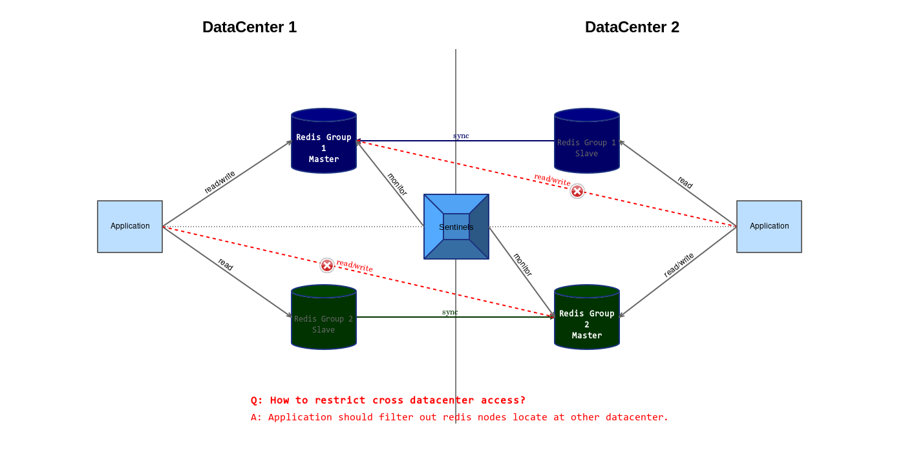
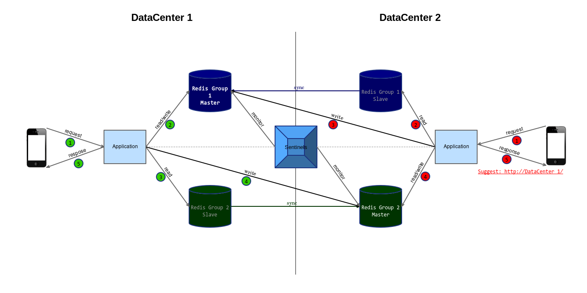

减少或避免跨机房 Redis 访问的好处
减少跨机房网络流量
很多机房外网流量是有限制的，外网流量过高会影响整个服务的稳定性，甚至拒绝服务。
更快的响应速度
跨机房网络传输的网络延时很高。
更安全
Redis 本身的安全机制很薄弱，目前只支持明文密码验证，依靠 iptables 进行访问限制，运维成本高。
如何减少或避免应用的跨机房访问
单维的数据模型
如果整个应用的数据集是单维度的，即基于同一主键，按主键进行数据分片（Sharding）后，同一主键所属的数据会处于同一分片（Shard），按主键访问时是无共享（shared-nothing）的，可以水平无限扩容。
多维的数据模型
如果整个应用的数据集是多维度的，按一个维度进行数据分片（Sharding）后，按另一维度获取数据时，需要同时访问多个分片（Shard）。
以博客应用为例
文章的模型定义如下
| Field | Type |
|---|---|
| id | Number |
| title | String |
| author | Number |
| content | String |
按 id 进行数据分片（Sharding），id 为寄数保存到 Shard 1，id 为 偶数保存到 Shard 2， 按 id 访问文章时，计算 id 对应的分片（Shard），从分片获得文章数据。 还可以在模型中添加冗余字段（如：author_name），方便显示作者名称，省去一次关联查询。
要获取 author 的文章列表，则需要在文章发布时按 author 索引文章，模型定义如下
| Field | Type |
|---|---|
| id | Number |
| name | String |
| articles | Set |
按 id 进行数据分片（Sharding），id 为寄数保存到 Shard 1，id 为 偶数保存到 Shard 2， 按 id 访问作者时，计算 id 对应的分片（Shard），从分片获得作者数据。
当应用逻辑很简单的时候（如：根据文章 id 展示文章、展示作者的文章列表），结合冗余字段，我们可以做到只从一个数据分区（Shard）中取得数据。但是发表文章时，则一定要同时更新多个分区（Shard）中的数据。
我们之所以如此介意跨分区（Shard）数据访问，是因为有可能两个分区（Shard）相隔甚远（如：部署在横跨大陆的多个数据中心），更高的延迟、费用，更低的稳定性，同时也会引入分布式系统带来的复杂性。
现实中有价值的应用服务，往往比较复杂，都是多维的数据模型，跨分区（机房）数据访问避无可避。
跨机房交互形式
管它跨不跨机房
一开始应用可能是部署在一个机房里，随着规模的扩大或者需要满足异地灾备，将一部分模块移到另一个机房，模块间的交互从内网移到了外网。以前在内网的时候，网络传输是很快的，设计的接口粒度很细，迁移到外网跨机房环境下，性能以及稳定性可能会无法接受，最终要不断地进行优化。
重定向客户端请求到数据所属的机房
如通过 HTTP 302 指示客户端（通常是浏览器）跳转到数据所属机房的域名（或 IP）。 会增加客户端开发的复杂性，很多逻辑需要放在客户端来完成，能够将机房外网流量尽量减少。
代客户端进行跨机房请求
如代理发起 HTTP 请求（或内部通信机制，如：消息队列）到所属机房的域名（或 IP），并转发响应给客户端。 会增加后台应用开发的复杂性，如果应用有内置的内部通信机制（如：消息队列）复杂性还是可以接受的，会增加机房的外网流量，只能算是一种过渡方案。
支持跨机房访问但引导客户端访问正确的数据中心
用户请求涉及的部分数据如果在另一机房，则直接跨机房访问，如同数据在本机房一样进行处理，并在响应中指示客户端下次到另一机房进行访问。后台应用和客户端的开发不会过度复杂，通过引导客户端访问正确的数据中心进行优化。
协调访问数据分片
假设数据按照主键的 hash 值进行取模分片（Sharding），数据与分片（Shard）的对应关系对应如下：
shard = hash(key) % count(shards)
多机房下的数据分片（Sharding）需具备以下特性：
- 数据片（Shard）一定会处于某一机房，但不可同时处于多个机房
- 数据片（Shard）所属机房如果挂了，其它机房的复本之一会被激活，数据片（Shard）重新可用
- 除非所有机房都挂了，否则数据应该总是可用的（Availability）
以上三点可由 Redis Sentinel 保证。
Redis Sentinel 以星状组织 Redis 结点拓扑，对于多数据中心部署的 Redis 集群，结点超过 2 个时可能会导致机房间流量暴涨（如：需要从一个机房的 Master 同步多份数据到另一个机房的多个 Slave）。 所以，最好把数据集切分得更细一些，直到一组 Redis 实例（即 1 Master + 1 Slave）即可容纳并可满足客户端请求。
直接访问 Redis 往往是耦合度很高的一种形式，Redis 中的数据是所有服务结点共享访问的，访问冲突和状态不一致可能会导致业务出错。
我们希望机房间除了 Redis 的 Master-Slave 间的数据同步之外不再有其它的交互，最好不要有应用（Application）跨机房操作 Redis 以实现业务逻辑的情况发生。

如何在限制跨机房 Redis 访问的情况下实现业务逻辑呢？
重定向客户端请求到数据所属的机房
后端服务结点知道哪个数据中心更适合处理用户的请求，向客户端发出重定向指示即可，不需要耗费其它资源。
通过跨机房交互满足客户端请求
完成请求需要与另一机房的服务交互，如通过调用服务接口（如：Restful API）的形式，完成整个业务逻辑处理。 也可以将客户端的请求转发到另一机房服务，并将响应发回客户端，相当于是内置了服务代理（Proxy）功能。
由此可见，不跨机房访问 Redis 这份美好是有代价的，客户端和服务器端的业务逻辑会更复杂，客户端或服务器端需要针对跨机房的数据进行特殊处理。
通过选择正确的数据分片（Sharding）方式，确保主要或高频次的客户端请求能够在同一数据中心内完成。次要或低频次的客户端请求允许跨数据中心，通过在本地数据中心部署其它数据中心的复本（Slave）的方式，将跨数据中心"读"转化为本地"读"，少量的跨数据中心"写"不成问题。
如下图所示  Redis Group 1 存储主要或高频次的数据，Redis Group 2 存储次要或低频次的数据。
客户端通过 DataCenter 1 访问本地的 Redis Group 1 属于合理的访问。 业务逻辑可能需要访问 Redis Group 2，读操作可以发往本地的 Redis Group 2 Slave，写操作要跨机房访问 DataCenter 2 中的 Redis Group 2 Master（应该尽量减少）。
客户端通过 DataCenter 2 访问本地的 Redis Group 2 属于合理的访问。 业务逻辑主要需要访问 Redis Group 1，读操作可以发往本地的 Redis Group 1 Slave，写操作需要跨机房访问 DataCenter 1 中的 Redis Group 1 Master， 这是不合理的，因此在发给客户端的响应中指示客户端下次将请求发往 Redis Group 1 Master 所在的 DataCenter 1。